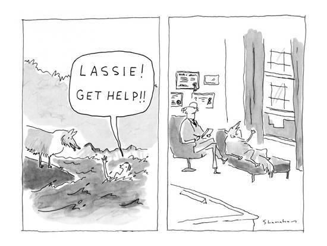

Giraffes can Talk!
An introduction to
Nonviolent Communication.
As developed by Marshall B Rosenberg (PhD)
I invite you all to unmute yourself; turn on your video and
Smile like you just saw the cutest puppy in the world
Now we are going to do RAPID Hmmmppphh intros
Say your name (ONLY your name, not my name is..), make an action or a weird face expression alongwith either a YES or a NO depending on whether or not you have heard of NVC before, the way you say yes/no should match the action, and then everybody repeats the name and sound. You choose the next person to go.
For e.g. Vikraant, Yhhesssss! (hulk style)
or Vikraant, Noooo :( (scary face style)
your challenge as a group is to finish this in 2 minutes starting now, covering everyone and GO
Giraffes - the animals with the largest heart are an embodiment of the intention behind NVC
The intention is to create a quality of connection that is necessary to meet everyone's needs compassionately
Nonviolent Communication holds that most conflicts between individuals or groups arise from miscommunication about their human needs, due to coercive or manipulative language that aims to induce fear, guilt, shame, etc. .
Norms for this session:
Please mute your microphones.
Please turn on your cameras and be in gallery view when I am not sharing my screen.
Please write down your Questions in the chat.
Please keep giving me on-the-spot rapid feedback in the chat.
Substep 1: Please mute your microphones.
Substep2: Please turn on your cameras and be in gallery view when I am not sharing my screen.
Sub3: Please write down your Questions in the chat.
Sub4:Please give me Rapid feedback, you do an activity or you hear me saying something that really works for you, just take 5 seconds then and there to drop a message in the chat - that was great! Or I didn't connect with that. Or a practice scenario might help here.
You are quarantined in your home
you need something to do with yourself (tap your head if you can relate to this)

Your strategy to meet your need is to watch netflix on the family desktop.
Unfortunately, your Mom has a zoom conference that she wants to attend
Now there are two things you can do
Option A: You assert your right and watch netflix because your mom's always
doing conferences and she has no right to keep you from meeting your needs.
Option B: You say, "hey mom, can I watch netflix on your work iPad instead so that we can both fulfill our needs?"
(STOP SCREEN SHARING go to gallery view)
Now, I invite you to switch to gallery view...
and turn off your video if YOU would choose option 1,turn on your video if you would choose option 2
So, there you go, the point is very simple - NVC is based on the assumption that We would prefer to meet needs in ways that don’t harm others if we recognize a path of action that will also meet our own needs.
GIVE
The amazing thing about humans is that the most base need for everyone is simply a need to contribute to life, to contribute to others, to give, to feel nice about oneself and fulfilled and satisfied because "hey I did something nice :)" Pinch your nose if you resonate with that.
NVC begins by assuming that we are all compassionate by nature and that violent strategies—whether verbal or physical—are learned behaviors taught and supported by the prevailing culture created to dominate over the underprivileged.
We all have the same needs.
Write into the chatbox a human need and send me a virtual thumbs up when ready, we will all post together when I say WATERFALL.
Examples of needs.
What is one need of yours that this 2-day jump conference is meeting?.
What is one need of yours that this 2-day jump conference is meeting?
type it out in no more than a small sentence or even a word and hit send
(Read them out from chat as they come - need for growth, learning, feeling good about oneself etc.)
How else could you meet that exact need?
Where we differ from each other is in our strategies to meet needs.
Conflicts occur at the level of strategies, not needs.
Great! Now, take a moment and think about how else you could meet that exact need? Type it out, send it over
(Read them out - exactly! You could read a book - could read NVC, you could help your dad in the kitchen to feel good about yourself etc.)
SO - Where we differ from each other is in our strategies to connect/meet needs. Conflicts occur at the level of strategies, not needs.
For e.g. A strategy to meet your need of connection could be to want to talk your boyfriend/bestfriend right now, but he/she/they are tired or don't like being on the phone for long periods of time (jazz hands if you can relate to either person in that scenario)
but hey, maybe they would agree to watch the same episode of netflix with you from afar, that's connection!
maybe they would like to do Yoga with you on the phone where you each choose a pose, that's a connection!
And so instead of blaming your friend - "you don't love me like I love you! You never want to talk to me!", you can choose to be the Giraffe in the situation and find another strategy of meeting your needs.
(1 substep: Where we differ from each other is in our strategies to meet needs.
Conflicts occur at the level of strategies, not needs)
(SWITCH OFF SCREEN SHARING, GALLERY VIEW, CAMERAS ON)
How would you feel when your needs are recognized and attended to?
Show me an expression of how would you feel?
we feel happy, satisfied, excited, etc.
How would you feel when your needs are NOT recognized or attended to?
When our needs are not recognized and attended to, we feel sad, scared, angry, etc
Feelings are a result of either our needs being met or our needs not being met. Simple. You feel angry, some need is not being met, you feel satisfied, some need is being met.
(SCREEN SHARE AGAIN)
The FOUR part NVC process.
Now, let's talk about how we can communicate in a way wherein the needs of everyone involved can be heard (and notice that I am saying heard, not stated, even if your Mum is scolding you and blaming you using violent language that humans are used to, you can still use NVC to hear the need behind her strategy i.e. her anger and scolding) Communication goes two ways Nonviolently expressing/talking and Nonviolently listening
1. Separating Observations and Evaluations.
The first step is to separate observations from evaluations, evaluations label something or someone as right or wrong, lazy or kind, observations notice specific actions or facts and express them
Can you type into the chat what it is that you see? 3o seconds.
(read it out loud from the chat)
Is that an observation or an evaluation? Type it into the chat.
Observation: The paint on that wall is peeling off.
Evaluation: That wall needs a fresh coat of paint.
So in NVC practice:
A violent evaluation is: "Boy, that Amber is a really lazy person! She won't get the project in on time"
Separated observation: Amber turned in her last 3 projects late.
Observation or Evaluation?
1. Keith is always late.
2. Keith was late to the first class 3 days out of 5 last week.
3. Vikraant didn't ask for my opinion during the debrief.
4. Vikraant never asks for my opinion.
Now I invite you to type into the chat whether the following statements are expressing observations or evaluations. Type the sentence numver followed by obse/eval.
Keith is always late.
Keith was late to the first class 3 days out of 5 last week
Vikraant didn't ask for my opinion during the debrief
Vikraant never asks for my opinion
Firstly, lets just blacklist the words ALWAYS and NEVER, ironically they are almost ALWAYS followed by evaluations.
Do you see the negative impact of an evaluation? What are you doing there?
(You are terming a person as having a set particular quality - if I tell you "You are really aggresive" You would probably feel bad and judged and not very kindly towards me. But, If I present concrete observations "Hey, bud, I thought you were aggrseive with your kid brother back there, do you want to talk?" - while taking responsibility for my thoughts then I am not naming/judging you anymore.)
Breakout Room Activity: What I am seeing is...
2 minutes total.
2 Prompts/Scenarios (wherein someone is taking an action which may/may not meet your needs).
Express your clear observation to your partner for Scenario 1 and switch for Scenario 2.
Breakout Room Activity: I Observe
2 minutes total
2 Prompts/Scenarios wherein someone is doing something to you.
We will send the prompt to you by BROADCAST message
Express your clear observation to your partner for Scenario 1 and switch for Scenario 2.
Example: Your teacher keeps making you read out of the textbook and hasn't explained a single chapter herself since the new term started.
"Ma'am sinvce the beginning of the term you have chosen to make us read the book to learn the syllabus in class, I am noticing that you haven't explained the way teachers normally do to us."
2. Taking responsibility for our feelings
+
Differentiating between feelings and thoughts.
You might know a version of this rhyme that children in my neighbourhood used to sing when I was 5, "Sticks and stones can break my bones, but names can never hurt me"
Even at age 5 we had the awareness that we have a choice as to how we react to things and other peoples names could only hurt us depending on how we took it
Responsibility = Response + able, we can only be responsible for that which we are able to control, we can't control how people interpret our behaviour, therefore we are not responsible for the feelings that follow their interpretaions, BUT, a big BUT we can control and are hence responsible for our behaviour itself and our intentions, we can control whether our behaviour is harming somebody or not.
Likewise, Other people are responsible for their behaviour, for things they say and do, and we are responsible for how we take it!
I got slapped twice last week... The first time was when I was stopping a man from being violent with his wife, I came in between them and he slapped me. I could have strangled him, I felt so enraged.
The second time was when I was telling the lady in question why she should love herself as much as she loves for her children and if one of her children wanted to stay with the dad, then he could. She slapped me, "how dare you say something like that!!" I felt nothing but empathy and compassion for her.
I chose to feel anger. I chose to feel compassion. Their action towards me didn't make me feel anything, I did.
So in NVC we follow any expression of feelings with BECAUSE I. I am feeling hurt because I, never you make me feel, or I feel angry because you. Always I feel because I. Our feelings are a result of how we take things.
Thought or Feeling?
1. I feel like you don't love me.
2. I feel as if they don't care.
3. I feel frustrated.
4. I feel that you always do this.
5. I feel it is not the right thing to do.
6. I feel (he/she/they) is/are really mean.
7. I feel fulfilled.
Now I invite you to unmute/type into the chat whether the following statements are expressing thoughts or feelings. Type the sentence numver followed by thought/feeling.
I feel like you don't love me.
I feel as if they don't care.
I feel frustrated.
I feel that you always do this.
I feel you are always judging me.
I feel it is not the right thing to do.
I feel (he/she/they) is/are really mean.
I feel fulfilled.
I feel lonely.
Thoughts, evaluations, judgements and criticisms usually follow when you follow "I feel" with "that, he/she/they/you, like, it etc." While taking responsibility for your feelings, you say "I feel _ because I __am needing_ or was expecting" and not "I feel _ because you _did this_"
3. Identifying and expressing needs.
Empathetically looking forneeds.
I have a need for respect and so I feel upset when someone talks about me behind my back, because I don't think I am accepted when that happens. My need for inclusion isn't met when I am picked last when splitting soccer teams, I feel sad because of this.
Breakout room activity: Listening for needs.
You will be given a scenario
You have 90 seconds to come up with what the needs of the person in this case may be
One of you jots the needs down in the breakout room chat, copy them and paste them into the main session chat immediately upon returning.
You will be given a scenario
You have 90 seconds to come up with what the needs of the person in this case may be
One of you jots the needs down in the breakout room chat, copy them and paste them into the main session chat immediately upon returning.
Your bed isn't made, your ipad is lying on your pillow with oily fingerprints on it, the bedroom floor is strewn with clothes - clean and dirty, your closet is all over the place.
Your mum sees your room and goes into a tantrum, you are being shouted at, blamed, called lazy-good-for-nothing, grounded etc.
What are the base human needs of your Mum that are not being met?
4. Making or hearing concrete requests that are gifts to others.
When people hear our requests and see it as an opportunity to contribute to our wellbeing, to give to us, it gives them this opportunity to do what we human beings love more than anything else - to serve life, to contribute and feel good about themselves!
But if the same request is heard as a demand, it threatens the person's AUTONOMY, it comes from a feeling of enslavement! And if they say yes, when they don't want to, they are doing something for you not out of compassion, or a desire to enrich your life, but out of fear that they will be punished, rejected, guilted, shamed etc.
After we have expressed our observations, feelings, needs to the other person, we follow it up with what we would like for them to do to contribute to our wellbeing.
This is done by saying what we DO want, rather than what we don't want (don't = heard as criticism and confusion as to what they actually should do)
+
concrete action language,
an IMPORTANT differencebecause the energy they are doing it with is not of receiving your request as a gift, reduces their chances of responding compassionately to you in the future.
How to frame a request?

Step 1: Positive action language - saying what we DO want, rather than what we don't want (don't = heard as criticism and confusion as to what they actually should do)
Step 2 : Concrete action language = We want to avoid vague, abstract or ambiguos phrasing.
In this cartoon, the man is drowning, he shouts out to his dog on the shore, "lassie get help", in the next frame we see lassie on the psychiatrists couch. We all know how help means different things to different people.
Step3: Follow through - there should be room to say no - in the energy that you say it with, if someone can't say no, it doesn't help either of you, it generates ill-will, reduces compassion
Give me an example of a request?
Give me an example of a demand?
Give me an example of an evaluation that is meant to be a request?
Give me an example of a demand?
Give me an example of an evaluation that is meant to be a request?
Optional Activity post the webinar: Journal like a Giraffe! (10-15 minutes)
What need of yours was met or not met by this workshop or full day of conference?
How do you feel because of it?
What is a goal or a concrete request that you have for yourself?
what need of yours was met or unmet by this workshop, how do you choose to feel because of it, what is one concrete request in positive action language that you would like to make of yourself?